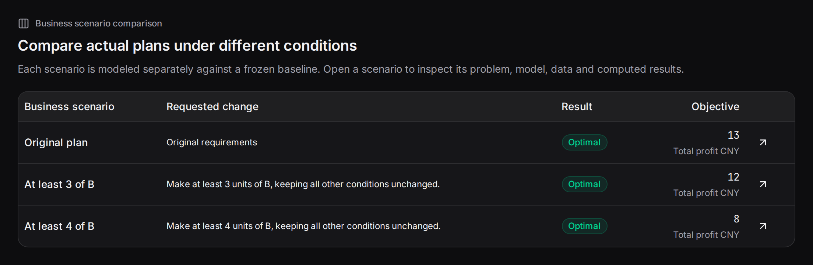

Business scenarios compute several explicit changes from one saved plan. Compare demand, budgets, capacities, availability or supply conditions.
Create a scenario group#
Choose “Business scenario comparison” below a result. Enter names and changes for 2–6 scenarios. Names identify results; changes become revised problem statements. Each run uses the common inputs and original configuration.
Scenario 1: regular order, at least 3 units of B.
Scenario 2: larger B order, at least 4 units of B.
You can also request several scenarios in one plan-conversation message, then compare the batch.
Branching from one baseline#

Mermaid source
flowchart TB
Base["Fixed original: objective 13"] --> First["Scenario 1: B at least 3"]
Base --> Second["Scenario 2: B at least 4"]
First --> SolveOne["Independent modeling and solve: 12"]
Second --> SolveTwo["Independent modeling and solve: 8"]
SolveOne --> Compare["Compare alongside original"]
SolveTwo --> Compare
Base --> Compare
Every scenario saves its statement, code, execution and result. Scenario conversation retains the original current baseline; select a scenario explicitly to continue from it.
A complete comparison#
| Plan | A | B | Profit |
|---|---|---|---|
| Original | 3 | 2 | 13 |
| B≥3 | 2 | 3 | 12 |
| B≥4 | 0 | 4 | 8 |

Read status and objective, then changed decisions. The table prioritizes the first 20 changed same-named variables. Open a run for complete values and inputs.
Try creating and selecting scenarios#
Choose “Compare B ≥ 3 and B ≥ 4,” then select the saved “B ≥ 4” plan below. The current discussion plan updates. “Check resource use” now reads that scenario's quantities and hours.
Start with A = 3, B = 2 and profit CNY 13. Choose a message, then select a saved plan as the baseline for your next question.
A fixed teaching example, computed instantly in your browser.
Useful scenario patterns#
| Business question | Changes |
|---|---|
| Demand growth | Raise product/store demand separately |
| Staff absence | Make an employee unavailable on a date |
| Budget negotiation | Compare total spending caps |
| Maintenance | Reduce capacity on selected dates |
| Supply disruption | Change warehouse supply or disable routes |
Specify objects and values, keeping objective meanings and units aligned. For cumulative changes, apply revisions successively.
Recording and archiving#
The middle of the recording shows scenario entry and the comparison table. Each scenario has its own link and supports Excel export, tags and notes.
Read the transcript
- Enter a production problem and start modeling.
- Review the computed plan: A = 3, B = 2, total profit 13.
- Enter two scenarios: at least 3 units of B, and at least 4.
- Compare from one baseline: original profit 13; scenario profits 12 and 8.
- Open an attachment and inspect its fields and values.
- Edit A's unit profit and save the attachment to the draft.